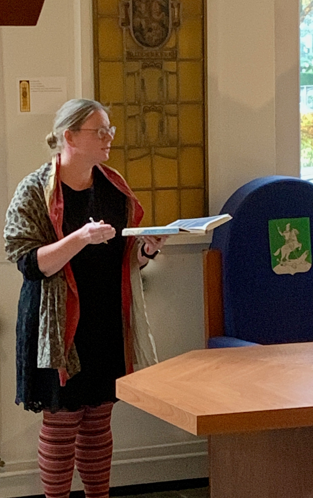

Medieval and Renaissance specialist and soprano Marsja Mudde (Ridderkerk, 1976) was fascinated from an early age by increasingly older classical vocal music. From the start of her singing studies at the Fontys Conservatory in Tilburg, she specialized in the Middle Ages and Renaissance with Dr. Rebecca Stewart, head of the Early Vocal Ensemble Music department. After her extraordinarily successful graduation concert on Saint Michael and All Angels, she followed many more specialization courses at master level. She immersed herself in, among other things, the Paris Notre Dame repertoire, Hildegard von Bingen, Modern Devotion and Gregorian chant music from all European regions.
During her studies and since then, she has performed extensively at home and abroad with Ensemble Trigon, Ensemble Cantus Modalis, Ensemble Per Sonorem Vocis, her own Ensemble Anime Beatitudinis Cantanti and others. She gave concerts and workshops in South Korea, Georgia, Germany, Portugal, France and Belgium.
Marsja has also had a thriving singing teachingpractice since 2005, which attracts students from all over the Netherlands because of her specialization. She also teaches and assists at the Center Cantus Modalis training center, which annually organizes several masterclasses for professional singers on Renaissance and early Baroque composers and their work.
Within this center she also participates in scientific research and publications. Next year she will publish a tutor on the specific techniques a singer needs to perform medieval and renaissance repertoire and other modal oriented music (such as much new classical music).